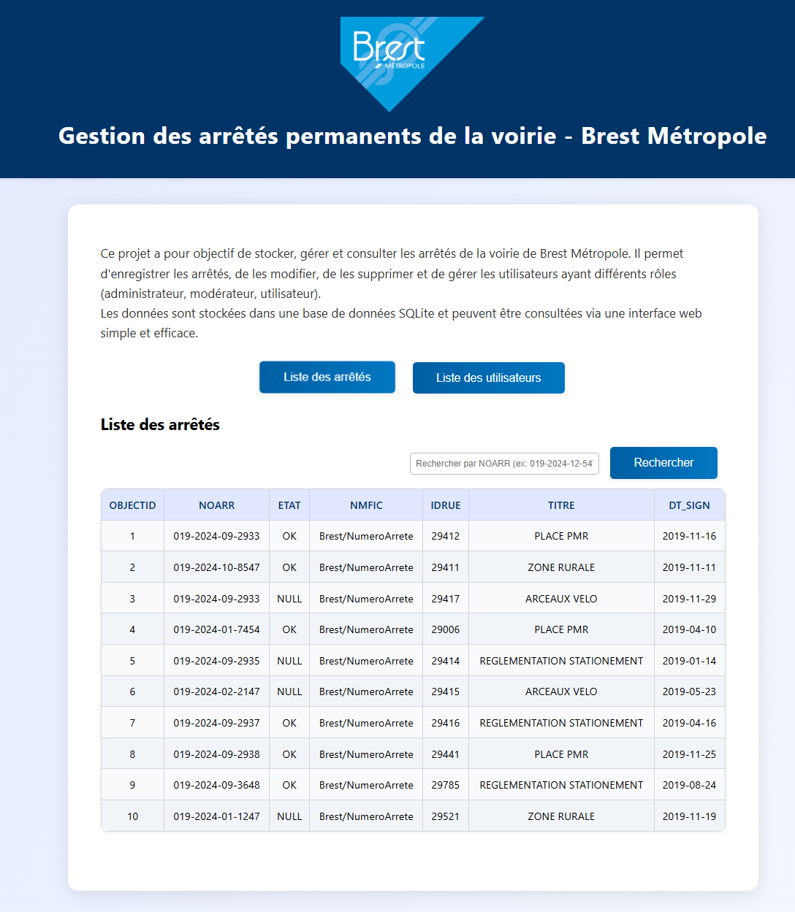
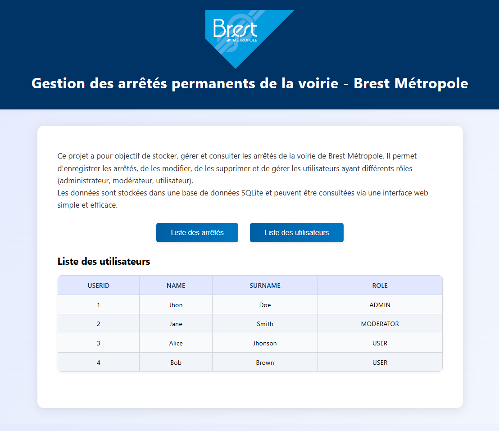

Brest Métropole en bref
Le service est chargé de gérer les arrêtés de voirie — décisions administratives réglementant la circulation, le stationnement et l'usage de l'espace public. Chaque arrêté doit être correctement enregistré, géolocalisé dans des outils SIG (ArcGIS Pro et SIGEO) et diffusé aux services concernés.
Trois outils développés
En parallèle de la mission principale de mise à jour cartographique, j'ai développé trois outils pour moderniser et faciliter la gestion des arrêtés, dans la continuité du travail d'un précédent stagiaire.
Création d'un site web permettant de rechercher, consulter et gérer les arrêtés de voirie directement depuis un navigateur. L'objectif était de rendre la consultation plus rapide et intuitive pour les agents de Brest Métropole.
Le site est connecté à une base de données SQLite et affiche les données en temps réel. Il intègre un système de rôles utilisateurs (Admin, Modérateur, Utilisateur) avec des permissions différentes sur les données.
⚠️ Ce site est connecté à une base de données test et non à la vraie base Brest Métropole, pour des raisons de confidentialité.
Captures réelles de l’interface de consultation et de gestion des arrêtés réalisés dans le cadre du projet.


Développement d'un script Python avec menu interactif en ligne de commande permettant de gérer directement les arrêtés de voirie. Ce script s'inscrit dans la continuité du travail d'un précédent stagiaire et vise à préparer la transition vers le futur logiciel développé par la SIG de Brest Métropole, qui remplacera ArcGIS Pro.
Le script interagit avec un fichier .xlsx (pour les tests) et est conçu pour être facilement adapté à une base SQLite ou à la future base de données de la SIG.
# Menu interactif de gestion des arrêtés de voirie def afficher_menu(): print(""" Menu : 1. Afficher les premières et dernières lignes du fichier 2. Rechercher une ligne par numéro NOARR 3. Remplacer une valeur dans une ligne (par NOARR) 4. Créer un nouvel arrêté 5. Supprimer une ligne (par NOARR) 0. Quitter """) while True: afficher_menu() choix = input("Votre choix : ").strip() if choix == "1": afficher_contenu(df) elif choix == "2": rechercher_arrete(df) elif choix == "3": df = modifier_valeur(df, fichier) elif choix == "4": df = creer_arrete(df, fichier) elif choix == "5": df = supprimer_arrete(df, fichier) elif choix == "0": break else: print("Option invalide.")
Création d'une base de données SQLite pour tester le fonctionnement du script Python et du site web sans interagir avec les vraies données de Brest Métropole. SQLite est léger, sans serveur dédié, et stocke tout dans un seul fichier — idéal pour un environnement de développement et de test.
La base contient deux tables correspondant aux besoins du service :
Cette base est reliée au site internet et sert de support de test pour le script Python. Elle simule la structure de la vraie base de données de Brest Métropole, permettant de valider les fonctionnalités avant déploiement.
import sqlite3 conn = sqlite3.connect("db.sqlite") cursor = conn.cursor() # Table des arrêtés de voirie cursor.execute(""" CREATE TABLE IF NOT EXISTS arrete ( OBJECTID INTEGER PRIMARY KEY, NOARR TEXT, ETAT TEXT, NMFIC TEXT, IDRUE INTEGER, TITRE TEXT, DT_SIGN DATE )""") # Table des utilisateurs avec rôles cursor.execute(""" CREATE TABLE IF NOT EXISTS users ( USERID INTEGER PRIMARY KEY, NAME TEXT, SURNAME TEXT, ROLE TEXT -- ADMIN / MODERATOR / USER )""") conn.commit() conn.close()
Mise à jour cartographique des arrêtés
La mission quotidienne consistait à intégrer les nouveaux arrêtés dans la base de données cartographique d'ArcGIS Pro, en respectant un workflow précis en plusieurs étapes.
Prise en main des outils
Obstacles rencontrés
Ce que ce stage m'a apporté
Ce stage au sein de Brest Métropole a été une expérience formatrice et concrète. J'ai pu découvrir le fonctionnement d'un service public de proximité et mettre en pratique directement les compétences acquises en BTS CIEL IR : Python, HTML/CSS/JS, SQL et bases de données.
Les trois outils que j'ai développés répondaient à de vrais besoins du service — faciliter la consultation des arrêtés, préparer la transition vers un futur logiciel interne, et tester les interactions avec une base de données. Ce n'était pas des exercices scolaires mais des projets utiles en contexte professionnel réel.
Au-delà du technique, ce stage m'a aidé à gagner en autonomie, à collaborer avec une équipe professionnelle et à comprendre les enjeux d'une collectivité territoriale. Il a également débouché sur un contrat CDD d'une semaine en juillet 2025, ce qui a confirmé la qualité du travail fourni.